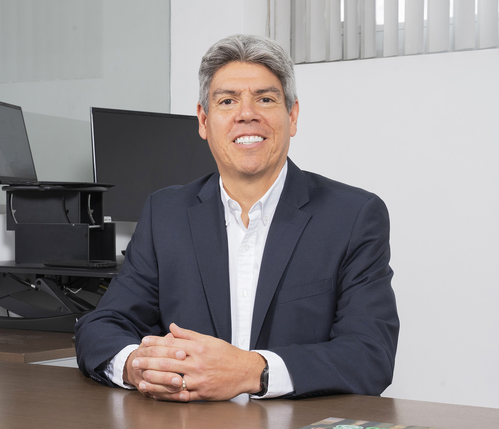

Global leadership
Gabriel Jaime
Caballero Luna
Global CEO
AGP’s vision and leadership, connected to the development of its solutions and markets.
Global experience and a team connected to the needs of the Mexican market.

Global CEO
AGP’s vision and leadership, connected to the development of its solutions and markets.
Mexico Director
The connection with armoring companies, professionals and the needs of the Mexican market.
Specify that your enquiry concerns Mexico and share the vehicle model, year and trim. The team can guide your next step. Assessment, quoting and installation remain with your armoring company.
Contact AGPOpens AGP’s corporate contact page. Mexico’s direct contact details, roles and biographies remain subject to confirmation for this prototype.